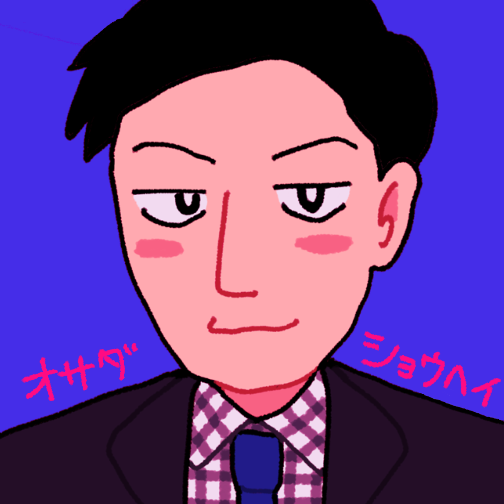
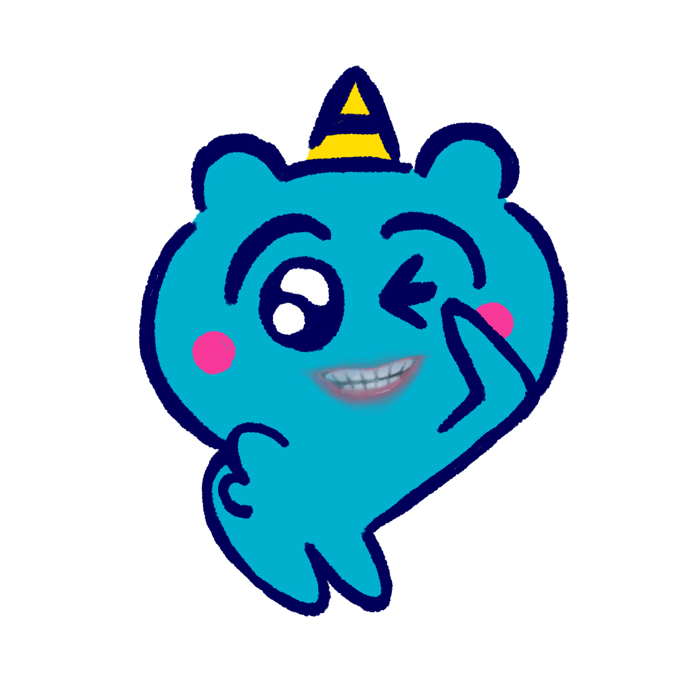
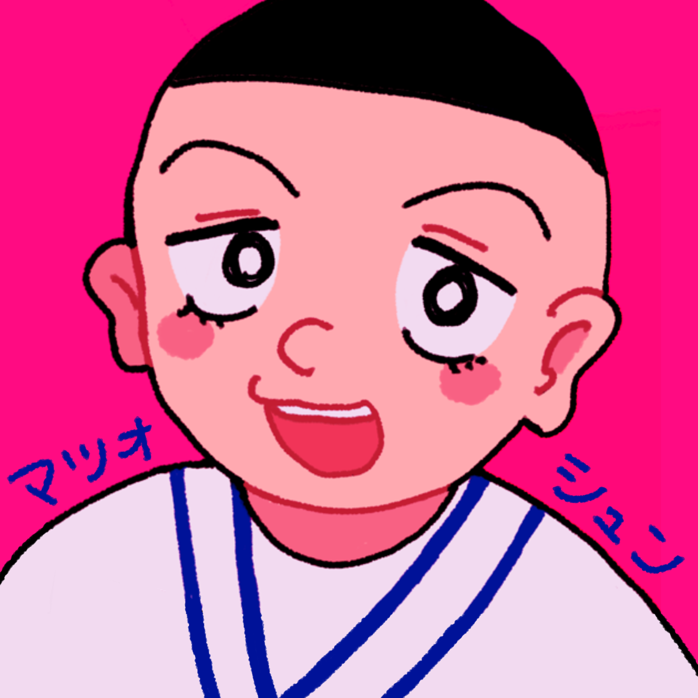
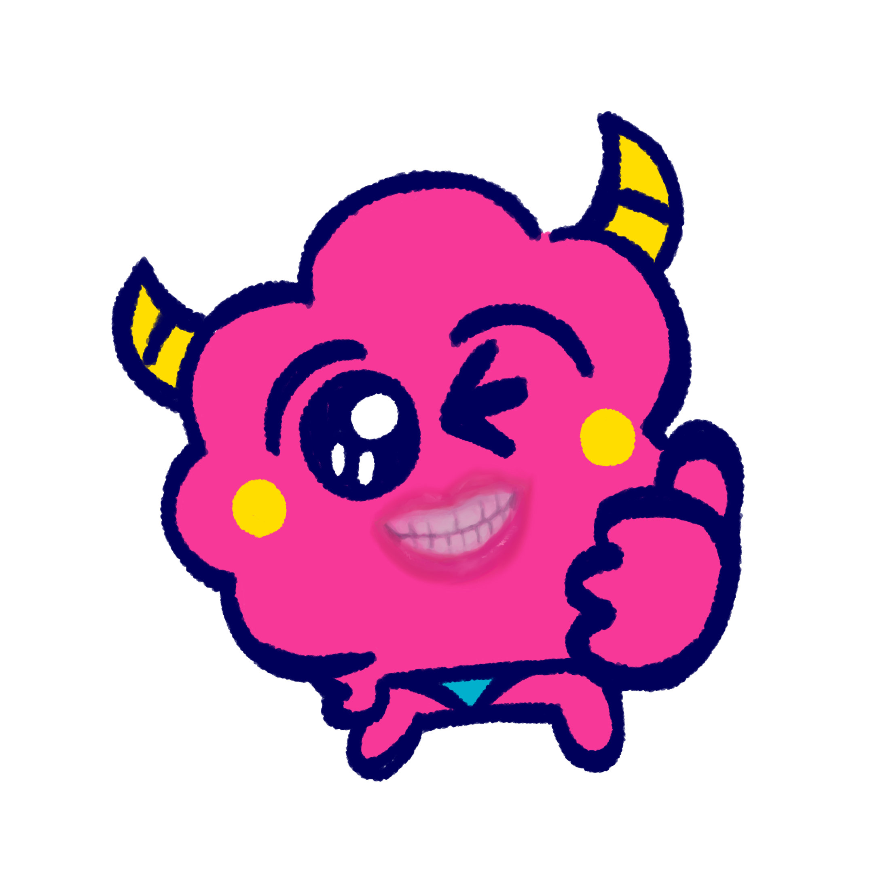

チョコプラについて
チョコレートプラネット
吉本興業所属、２００６年に結成。松尾からコンビ結成を誘ったが、ビジュアルが悪いという理由で一度断られている。
長田が製作する小道具や衣装を使ったコントを得意としており、明確にボケとツッコミは決まっていない。「TT兄弟」や、有吉の壁で生まれたパンサー向井と菅とのユニット「鼻炎」などのキャラクターが存在する。
YouTubeでは、様々な企画動画を出しており、「悪い顔選手権」が有名。最近はオリジナルソングのMVなども出している。

おさだしょうへい
（長田庄平）
１９８０年１月２８日生まれのA型
１６８cm、７０kg
出身は京都府上京区
ネタ作りを担当している。「そろりそろり」でおなじみの和泉元彌のものまねや、オリジナルキャラクターの「Mr.パーカーJr.」を演じている。
肩幅がとても大きく、座高も高い。友達が少ないが、パンサーの向井慧は自他共に認める親友。
ヘルピポシリーズのぴーち鬼（ぴーちき）の口を担当している。


まつおしゅん
（松尾駿）
１９８２年８月１８日生まれのO型
１６９cm、７７kg
出身は神奈川県箱根町
IKKOのものまねや坂上忍のものまねが十八番。オリジナルキャラクターの「Dr.タートルネック」を演じている。
長田が大きすぎるせいで小さいと思われがちだが、１cm大きい。カエルをとても嫌っている。
ヘルピポシリーズのぱーち鬼（ぱーちき）の口を担当している。
